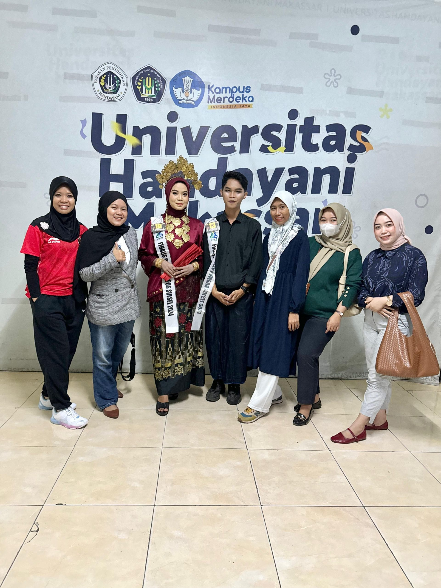
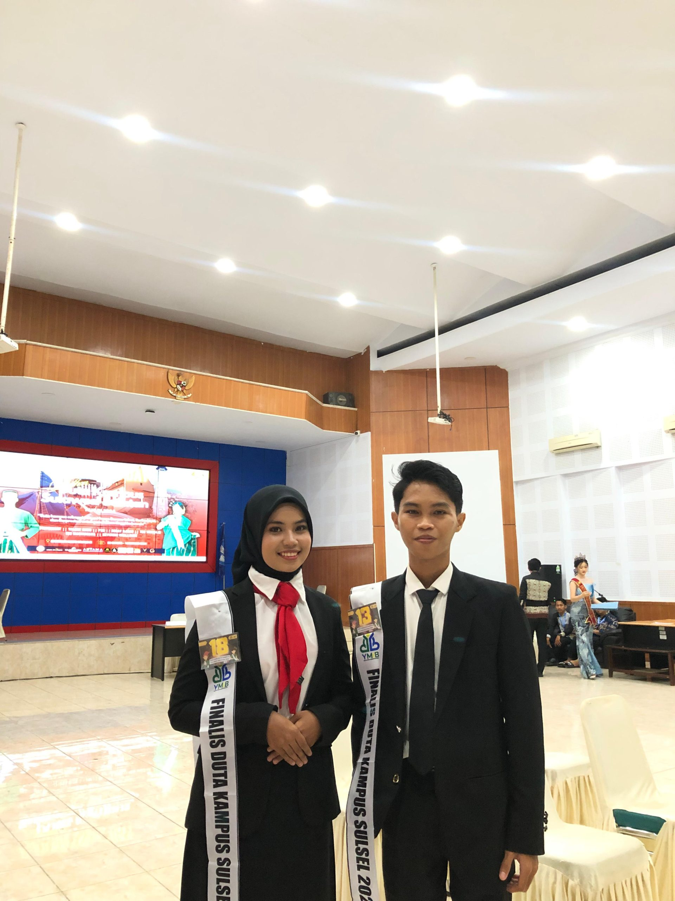

Mahasiswa Universitas Handayani Makassar mengikuti ajang Pemilihan Duta Kampus Sulsel 2024
Mahasiswa Universitas Handayani Makassar dinyatakan Lulus seleksi sebagai finalis dalam ajang Pemilihan Duta Kampus Sulawesi Selatan Tahun 2024 yang di umumkan melalui platform Media Sosial Instagram Duta Kampus Sulawesi Selatan pada tanggal 26 Oktober 2024.

Muhammad Sabri Al Munawarah dari program studi Teknik Informatika dan Eka Wahyuni dari program studi Manajemen Informatika berhak mengikuti tahapan berikutnya yakni Karantina, Talent Show dan Grand Final. Saat ini sesi Karantina sedang berlangsung selama 4 hari dari 30 Oktober sampai dengan 2 November 2024.Selain itu pada hari Rabu, para Grand Finalis Duta Kampus Sulawesi Selatan 2024, menggelar sesi Talent Show, dimana mereka akan menampilka talent serta kreativitas mereka. Muhammad Sabri Al Munawarah mendapatkan pujian dari dewan juri saat melakukan show dengan perpaduan budaya kearifan lokal dan puisi, demikian pula Eka Wahyuni yang menampilkan seni tari.
Seluruh jajaran Civitas Akademika Universitas Handayani Makassar, berharap kedua Finalis Duta Kampus Sulawesi Selatan Tahun 2024, dapat meraih prestasi terbaik nantinya hingga menjadi pemenang duta kampus Sul sel 2024, menurut humas UHM ” kegiatan ini merupakan bentuk ajang promosi kampus dan memperkenalkan talenta dari mahasiswa UHM tidak hanya dari segi performa namun juga mereka mampu bersaing dalam bidang debat ilmiah dan intelegenc” saya berharap malam puncak grand final yang akan dilaksanakan pada hari sabtu seluruh civitas dapat hadir memberikan support kepada ke dua finalis duta kampus kita.
← Kembali ke Halaman Informasi